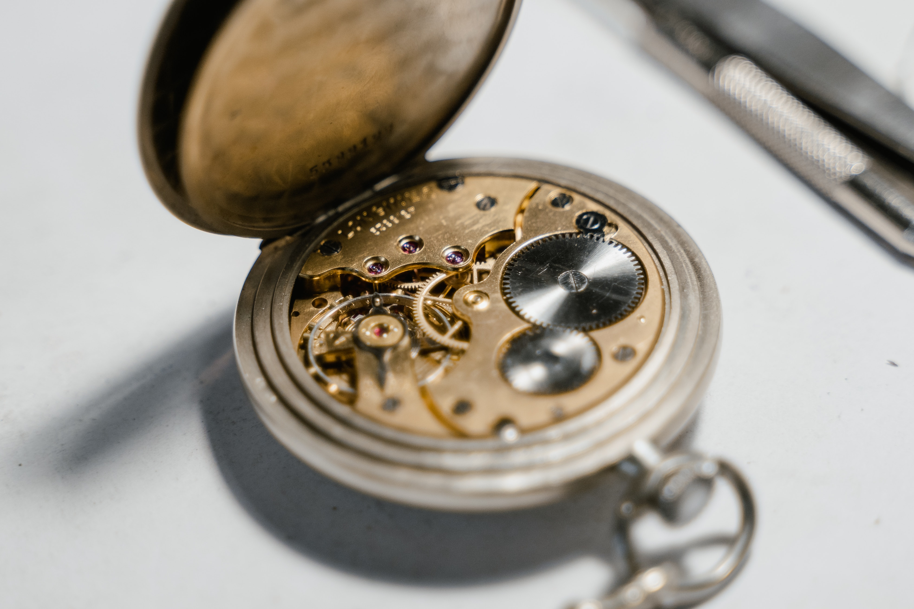

An automatic watch uses a self-winding rotor that powers itself simply by using the
kinetic energy built up when wearing the watch. This means you never have to charge it,
just simply wear it.
This is the movement that most luxury brands use in their watches because it is the most
useful, intriguing, and expensive.
Brands that use this movement include Audemars Piguet, Rolex, Patek Phillipe, Omega, etc.

Manual Movement Watches
A manual watch measures time uses a mechanism which employs a mainspring, once wound,
stores the energy that is then utilized to drive the balance wheel.
This movement requires you to wind the watch at least once a day.
Brands that use this movement include Tissot, Bulova, Grand Seiko, Hamilton, etc.
Quartz Watches
A battery powers quartz watch movements by transmitting an electrical current through a tiny quartz
crystal, which then becomes electrically charged and vibrates, generating energy.
These vibrations cause the watch movement to oscillate, driving the motor that powers the
movement of the watch hands. Also, this movement lasts for 20-30 years.
This movement is the most common because of how cheap it is and how easy it is to mass produce.
In the 1970s, the Quartz Crisis occured, which is when the quartz movement was introduced and mass produced
because of how cheap and easy it was to mass produce. This caused a big upheaval is Switzerland because a major
part of their workforce was involved in the watch industry, which was primarily automatic or manual watches that were expensive.
Brands that use this movement include Casio, Seiko, Citizen, etc.